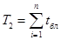
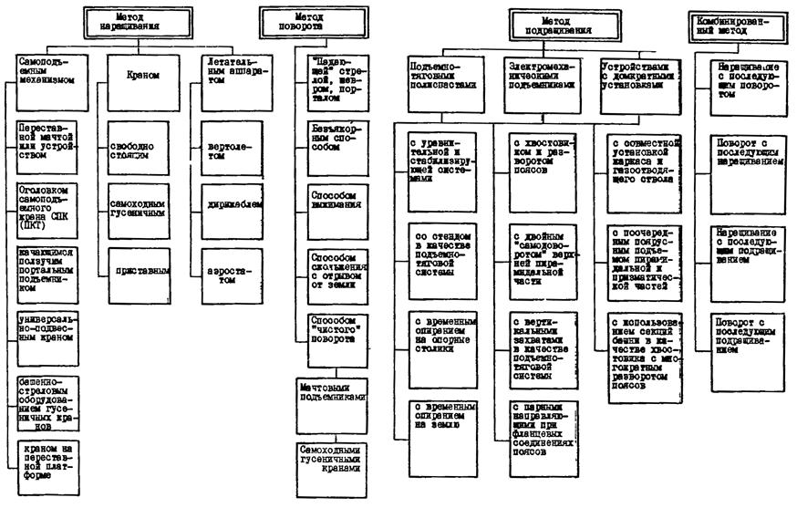
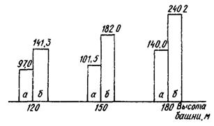
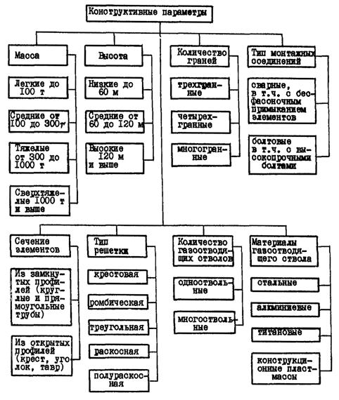
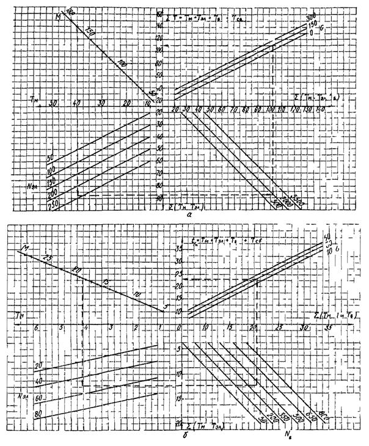

ВЕДОМСТВЕННЫЕ СТРОИТЕЛЬНЫЕ НОРМЫ
МОНТАЖ ВЫТЯЖНЫХ БАШЕН
ВСН 503-87
Минмонтажспецстрой СССР
МИНИСТЕРСТВО
МОНТАЖНЫХ И СПЕЦИАЛЬНЫХ
СТРОИТЕЛЬНЫХ РАБОТ СССР
Москва 1988
РАЗРАБОТАНЫ ВНИПИ Промстальконструкция (В.Г. Ким, В.А. Сдобняков, А.В. Семенихин при участии кандидатов техн. наук К.И. Лукьянова и Е.П. Полуянова).
ВНЕСЕНЫ И ПОДГОТОВЛЕНЫ К УТВЕРЖДЕНИЮ Главстальконструкцией.
|
Министерство монтажных и специальных строительных (Минмонтажспецстрой СССР) |
Ведомственные строительные нормы |
ВСН 503-87 Минмонтажспецстрой СССР |
|
Монтаж вытяжных башен |
Вводятся впервые |
1.1. Настоящие нормы распространяются на монтаж стальных конструкций одно- и многоствольных решетчатых вытяжных башен высотой 90, 120, 150 и 180 м.
1.2. Монтаж вытяжных башен следует выполнять в соответствии с требованиями рабочих чертежей, проекта производства работ (ППР) и настоящих норм.
1.3. Монтажные организации или по их представлению организации, разрабатывающие ППР, до передачи рабочих чертежей заводу-изготовителю должны выполнить оценку монтажной технологичности конструктивно-компоновочных решений вытяжных башен.
1.4. Проектные организации на стадии разработки ТЭО (ТЭР) вытяжных башен определяют и согласовывают со строительно-монтажными организациями в установленном порядке метод монтажа.
1.5. Организации, осуществляющие монтаж и разработку ППР, должны проверить расчетом конструкции несущего каркаса башни и металлического газоотводящего ствола на монтажные нагрузки от грузоподъемных механизмов и, при необходимости, согласовать с авторами проекта КМ.
2.1. Окрашенные стальные конструкции вытяжных башен массой до 300 т следует поставлять в течение одного квартала, при массе выше 300 т - по согласованному графику (заказчик - завод) или в порядке, предусмотренном ППР. Транспортирование конструкций следует осуществлять в пакетированном виде, обеспечивающем их комплектность, удобство погрузочно-разгрузочных работ и складирование.
2.2. Металлические конструкции собственно газоотводящих стволов диаметром до 3000 мм следует поставлять свальцованными и сваренными длиной до 12 м, выше 3000 мм - рулонными заготовками.
2.3. Входной контроль качества
|
Внесены Главстальконструкцией |
Утверждены
Минмонтажспецстроем СССР |
Срок введения
в действие |
2.3.1. Входной контроль качества включает в себя документальную, визуальную и инструментальную проверки качества.
2.3.2. Поставляемые стальные конструкции башни с газоотводящим стволом, сварочные материалы, крепежные, сборочные детали и изделия следует подвергать входному контролю качества.
2.4. К производству монтажных работ следует приступать после приемки работ по инженерной подготовке строительной площадки в соответствии с требованиями СНиП 3.01.01-85, ППР и при полной комплектации монтажной организации стальными конструкциями, метизами и монтажной оснасткой.
2.5. Разбивочные оси и контрольные точки установки геодезических инструментов должны быть нанесены на металлические детали, расположенные на поверхности фундаментов или в другом месте. Размещение разбивочных осей и реперов должно отвечать требованиям главы СНиП 3.01.03-84.
2.6. Укрупнительную сборку стальных конструкций необходимо выполнять на стеллажах или сборочном стенде-кондукторе.
2.7. Монтажные стыки элементов после сборки следует огрунтовать и окрасить согласно проекту КМ.
2.8. Средства подмащивания и монтажные приспособления необходимо закреплять на конструкциях башни до подъема.
2.9. При монтаже вытяжных башен высотой выше 50 м необходимо выполнять правила маркировки и светоограждения высотных препятствий, приведенные в "Наставлениях по аэродромной службе в гражданской авиации СССР" (раздел 3.2), введенных в действие в 1971 г.
2.10. Подливку бетоном башмаков башни следует выполнять после контрольной геодезической съемки, включающей проверку отметок поясов и геометрических размеров в плане смонтированного первого яруса башни.
2.11. Наличие и геометрическое положение закладных деталей для крепления монтажных устройств и якорей следует проверять при приемке фундаментов, а опорных временных устройств и столиков - в процессе укрупнительной сборки и поярусной установки конструкций.
3.1. Методы и способы монтажа вытяжных башен приведены в справочном приложении 1.
3.2. Монтаж вытяжных башен методом наращивания
3.2.1. Монтаж вытяжных башен методом наращивания следует выполнять с помощью оголовка самоподъемного крана СПК (ПКТ), приставного крана, а также с применением вертолета, если масса блока не превышает 8,5 т (черт. 1).
3.2.2. Самоподъемные и приставные краны после установки в рабочее положение должны быть освидетельствованы и испытаны согласно требованиям правил Госгортехнадзора и инструкций по их эксплуатации.
Схема монтажа вытяжных башен наращиванием
а - с помощью оголовка самоподъемного крана СПК (ПКТ); б - с помощью приставного крана; в - с помощью вертолета: 1 - электролебедка с якорем; 2 - тяговые полиспасты; 3 - газоотводящий ствол; 4 - опорные рамки; 5 - ловители
Черт. 1
3.2.3. Прикрепление крана к несущим конструкциям вытяжной башни следует проверять после каждой выдвижки новой секции крана и в начале каждой смены перед работой крана, а его перестановку осуществлять в соответствии с инструкцией по эксплуатации.
3.2.4. Монтаж вытяжной башни с помощью оголовка самоподъемного крана, установленного на металлическом газоотводящем отводе или на специальном трубчатом элементе, осуществляют в такой последовательности:
производят подъем на высоту секции металлического газоотводящего ствола с оголовком крана, прикрепленного к стволу в верхней части, с помощью тяговых полиспастов;
производят установку стальных конструкций очередного яруса несущего каркаса башни с помощью оголовка крана;
далее операции повторяют до окончания монтажа сооружения.
3.2.5. Другие способы монтажа методом наращивания (согласно справочному приложению 1) следует применять при соответствующем технико-экономическом обосновании и согласовании проектных решений с ВНИПИ Промстальконструкция.
3.3. Монтаж башен методом поворота
3.3.1. Монтаж методом поворота (черт. 2) рекомендуется производить при сооружении вытяжных башен высотой не более 100-120 м и наличии необходимого монтажного оборудования и оснастки, используемых при установке технологических аппаратов колонного типа на нефте- и газоперерабатывающих предприятиях. В других случаях целесообразность применения метода поворота должна быть подтверждена технико-экономическим обоснованием.
Схема монтажа вытяжных башен поворотом
а - "падающей" стрелой; б - безъякорным способом; в - способом выжимания; 1 - электролебедка; 2 - тяговый полиспаст; 3 - башня в процессе подъема; 4 - "падающая" стрела; 5 - тормозной полиспаст; 6 - портал; 7 - тяги; 8 - мачта выжимания
Черт. 2
3.3.2. До монтажа вытяжных башен методом поворота вокруг шарнира должны быть выполнены и приняты по акту фундаменты с шарнирами поворота возводимого сооружения и подъемных устройств. Подъем башни производить после набора бетоном 100 % прочности.
3.3.3. Перед установкой вытяжной башни в проектное положение производят испытание смонтированных конструкций и монтажной оснастки путем предварительного подъема сооружения на 100-200 мм с выдержкой 10-15 мин.
3.3.4. Контроль за усилиями, возникающими в процессе испытания и монтажа в подъемно-тяговой системе, следует осуществлять по показаниям динамометров.
3.3.6. Увеличение нагрузок на фундаменты следует согласовать с авторами проекта.
3.4. Монтаж башен методом подращивания
3.4.1. Монтаж вытяжных башен методом подращивания (черт. 3) следует производить с помощью полиспастной подъемно-тяговой системы (ППТС), используя стенд-кондуктор. При этом подращиваемую часть временно опирают на опорные устройства (столики).
Монтаж вытяжной башни методом подращивания с использованием стенда-кондуктора с временным опиранием подращиваемой части на опорные устройства
1 - стенд подъемно-тяговой системы; 2 - опорный столик; 3 - поворотная балка; 4 - неподвижный блок полиспаста; 5 - направляющая с паронитовой прокладкой; 1 - узел совмещения опорного устройства с направляющей и подвеской неподвижного блока тягового полиспаста
Черт. 3.
Уравнительное звено с динамометром
1 - металлоконструкции уравнительной коробки; 2 - отводные ролики; 3 - динамометр; 4 - обегающая нитка тягового полиспаста
Черт. 4
Подъемно-тяговая система
1 - электролебедка; 2 - уравнительная коробка; 3 - отводные блоки у основания башни; 4 - тяговые полиспасты; 5 - стенд
Черт. 5
3.4.2. При монтаже вытяжных башен в ППТС следует использовать уравнительное звено (систему) (черт. 4 и 5) для обеспечения равенства усилий в тяговых полиспастах.
3.4.3. Монтаж вытяжной башни выполняют в такой последовательности (черт. 6):
на этапе I производят установку верхней призматической и пирамидальной частей вытяжной башни и ППТС с помощью крана;
на этапе II выполняют последовательный подъем выдвигаемой части до проектной отметки с помощью ППТС.
Последовательность монтажных работ при возведении вытяжной башни подращиванием
а - план; б - первоначальный этап (крановый монтаж); в - первая выдвижка; г - стыковка укрупненного блока с ранее смонтированными частями призматического ствола башни; д - очередная выдвижка с помощью тяговых полиспастов; е - очередность укрупнительной сборки и монтажа вытяжной башни; 1 - электролебедки с якорями; 2 - канат тягового полиспаста; 3 - рельсовые пути надвижки укрупненных блоков; 4 - стенд; 5 - площадка складирования; 6 - кран; 7 - пирамидальная часть башни; 8 - призматическая часть башни с зонтом газоотводящего ствола; 9 - электролебедка подачи-возврата стенда; 10 - уравнительное звено сблокированных попарно между собой тяговых полиспастов; 11 - тяговый полиспаст
Черт. 6
3.4.4. Монтаж несущего каркаса призматической части вытяжных башен высотой 90-120 м следует производить совместно с металлическим газоотводящим стволом. Это необходимо учитывать при оформлении заказа на изготовление конструкций.
3.4.6. На этапе выдвижения призматической части башни следует испытать несущие конструкции каркаса башни, опорные устройства и ППТС в соответствии с требованиями ППР.
3.4.7. фактические усилия в отводной нитке, идущей на электролебедку, следует контролировать по показаниям динамометра (см. черт. 4) в процессе испытания и монтажа, сверяя их с расчетными данными.
3.5. Монтаж башен комбинированным методом
3.5.1. Монтаж вытяжных башен комбинированным методом, состоящим из двух (трех) методов, следует производить при реконструкции или восстановлении башен.
3.5.2. Целесообразность монтажа вытяжных башен комбинированным методом должна быть подтверждена ТЭО.
3.6. Монтаж газоотводящих стволов
3.6.1. Поставка металлического газоотводящего ствола для вытяжных башен высотой 90 и 120 м заводами Минмонтажспецстроя СССР должна осуществляться комплектно совместно со стальными конструкциями несущего каркаса. Поставку газоотводящих стволов при изготовлении их машиностроительными заводами осуществляет заказчик.
3.6.2. Членение металлического газоотводящего ствола на отправочные элементы должно соответствовать разбивке на монтажные блоки несущего каркаса башни.
3.6.3. Монтаж металлического газоотводящего ствола следует осуществлять одновременно с монтажом несущего каркаса башни, используя грузоподъемные механизмы, применяемые для его возведения, кроме случаев, оговоренных пп. 3.3.5 и 3.4.5 настоящих ВСН. В случаях, оговоренных выше, металлические газоотводящие стволы разных диаметров монтируют подращиванием тяговыми полиспастами, установленными в одном (реже двух) уровнях.
3.6.4. Монтаж неметаллических газоотводящих стволов следует производить после монтажа несущего каркаса башни предварительно укрупненными блоками. Газоотводящие стволы из текстофаолита и других неметаллических материалов монтируют последовательным подтягиванием предварительно укрупненных секций с помощью тяговых полиспастов. Общее направление монтажа - "сверху - вниз".
3.7. Монтаж конструкций следует производить с осуществлением пооперационного контроля качества.
3.7.1. Для пооперационного контроля качества следует использовать "Типовые схемы операционного контроля качества" (часть II. "Башенно-мачтовые сооружения и каркасы вытяжных труб", шифр 52630), разработанные ВНИПИ Промстальконструкция.
4.1. При выборе эффективных методов монтажа вытяжных башен следует руководствоваться технико-экономическими показателями, приведенными в табл. 1. Наиболее эффективен - метод подращивания.
Таблица 1
|
Метод монтажа |
|||
|
наращиванием |
подращиванием |
поворотом |
|
|
Приведенные затраты с учетом стоимости конструкций каркаса башни |
100 |
97,5 |
105,1 |
|
Приведенные затраты без учета стоимости каркаса башни |
100 |
77,0 |
118,0 |
|
Приведенные затраты на 1 т смонтированных конструкций башни |
100 |
74,0 |
114,4 |
|
Продолжительность монтажа |
100 |
69,1 |
86,9 |
|
Трудоемкость монтажных работ |
100 |
66,7 |
92,7 |
|
Выработка |
100 |
153,4 |
109,3 |
|
Уровень безопасности монтажных работ: |
|||
|
количественная оценка |
100 |
222,0 |
178,0 |
|
экспертная оценка |
100 |
180,0 |
170,0 |
4.2. Способ монтажа вытяжных башен с использованием стенда-кондуктора в качестве несущего элемента подъемно-тяговой системы с уравнительным устройством и с временным опиранием выдвигаемой части башни на опорные столики - наиболее эффективен по сравнению с другими способами метода подращивания.
4.3. Результаты анализа технико-экономических показателей различных вариантов монтажа вытяжных башен приведены в справочном приложении 2.
4.4. Объем верхолазных работ, выполняемых с помощью монтажного крана, при возведении методом подращивания вытяжных башен различными способами приведен в справочном приложении 3.
5.1. Оценку монтажной технологичности вытяжных башен следует проводить по критерию трудоемкости монтажных работ (укрупнительная сборка конструкций).
5.2. При оценке конструктивно-компоновочного решения вытяжной башни на монтажную технологичность необходимо руководствоваться основными конструктивными параметрами сооружения (масса, число отправочных элементов и болтов, масса наплавленного металла монтажных соединений), оказывающими наибольшее влияние на трудоемкость монтажных работ. Классификация вытяжных башен по конструктивным параметрам приведена в рекомендуемом приложении 4.
5.3. Общую трудоемкость работ по укрупнительной сборке вытяжной башни определяют по формуле
Т = Т1 + Т2, (1)
где Т1 и Т2 - трудоемкость укрупнительной сборки пирамидальной и призматической частей вытяжной башни. При этом

где tбл - трудоемкость укрупнительной сборки i-ого блока призматической части башни.
5.4. Трудоемкость сборки пирамидальной части башни определяют по формуле
Т1 = -2,276 + 0,267М + 0,19Nэл + 0,007Nб + 0,051G, (3)
где -2,276 - свободный член уравнения;
М - масса конструкций пирамидальной части башни, т;
Nэл - число отправочных элементов пирамидальной части башни, шт.;
Nб - количество болтов монтажных соединений, шт.;
G - масса наплавленного металла монтажных соединений, кг.
5.5. Трудоемкость сборки блока призматической части башни определяют по формуле
tбл = -0,339 + 0,239М + 0,163Nэл + 0,018Nб + 0,090G, (4)
где М - масса конструкций блока, т;
Nэл - число отправочных элементов в блоке, шт.;
Nб - количество болтов монтажных соединений, шт.;
G - масса наплавленного металла монтажных соединений, кг.
5.6. Оценку монтажной технологичности по конструктивным параметрам можно также производить по номограммам, приведенным в обязательном приложении 5.
5.7. Если показатель трудоемкости общей сборки вытяжной башни окажется выше базового варианта* не более чем на 10 %, разработчики ППР совместно с монтажной организацией должны подготовить предложения по повышению монтажной технологичности конструктивно-компоновочных решений, которые согласовывают с авторами проекта КМ.
_____________
* 3а базовый вариант принимают типовой проект "Вытяжные башни межотраслевого назначения высотой 90; 120; 150 и 180 м с металлическими газоотводящими стволами диаметром 1,8; 2,4; 3,0 и 4,8 м и с текстофаолитовыми стволами диаметром 1,8; 2,3; 3,0 и 4,5 м (шифр 8415КМ, выпуск 1 и 2), разработанный Ленпроектстальконструкцией (ведущая организация), Укрниипроектстальконструкцией, ВНИПИ Промстальконструкция и ПКБ Укрглавстальконструкция в 1986 г. (см. приложение 6).
5.8. Если показатель трудоемкости общей сборки вытяжной башни нового варианта окажется больше базового варианта на 10 %, рабочие чертежи КМ, как не отвечающие требованиям монтажной технологичности, следует возвратить заказчику для последующей доработки. При этом следует руководствоваться основными требованиями, предъявляемыми к конструктивно-компоновочным решениям вытяжных башен-труб, возводимых методом подращивания согласно приложению 7.
6.1. Монтаж конструкций вытяжной башни следует производить в соответствии с требованиями ОСТ 36-100.3.04-85, СНиП III-4-80 и настоящих ВСН.
6.2. Стальные конструкции вытяжной башни после установки опорной части сооружения необходимо заземлить.
6.3. Организации, разрабатывающие ППР и выполняющие монтаж конструкций, должны производить оценку уровня безопасности монтажных работ при окончательном выборе способа монтажа, если ТЭП вариантов имеют близкие значения.
6.4. Количественную оценку уровня безопасности монтажных работ, оцениваемую временем (трудоемкостью) верхолазных работ с учетом вероятностного воздействия травмирующих факторов, следует получать по формуле
Туб = М×К, (5)
где Туб - уровень безопасности монтажных работ, чел.-дни;
М - масса сооружения, т;
К - удельный показатель безопасности, чел.-дни/т, принимаемый по табл. 2.
6.5. При монтаже вытяжных башен методом подращивания необходимо:
а) контроль за прохождением выдвигаемой части осуществлять с площадок пирамидальной части башни в местах расположения направляющих, обеспечивающих общую устойчивость сооружения;
б) контроль за показаниями динамометров производить у центрального пункта управления, позволяющего включать (выключать) все электролебедки одновременно или раздельно, в месте расположения уравнительного звена (коробки) кроме случаев, указанных в п. 3.4.8;
в) проектное оформление стыков конструкций укрупненного блока с выдвигаемой призматической частью башни следует производить только при временном и надежном опирании выдвигаемой части на опорные устройства (столики), расположенные в пирамидальной части (см. черт. 3, узел А).
Таблица 2
|
Удельный показатель безопасности, чел.-дни/т, при высоте башни, м |
|||
|
120 |
150 |
180 |
|
|
Поэлементный монтаж (оголовком самоподъемного крана) |
0,92 |
0,91 |
0,90 |
|
Монтаж укрупненными плоскостями (оголовком крана или подъемником) |
0,85 |
0,81 |
0,78 |
|
Монтаж укрупненными блоками наращиванием (приставным краном) |
0,53 |
0,49 |
0,44 |
|
Монтаж укрупненными блоками подращиванием (полиспастными подъемно-тяговыми системами) |
0,36 |
0,32 |
0,25 |
|
Монтаж поворотом (с укрупнением в горизонтальном положении плоскостями и отдельными элементами) |
0,48 |
- |
- |
Примечание. Показатель безопасности равен времени работы монтажников на высоте при установке 1 т конструкций.
6.6. Демонтаж навесных лестниц и площадок следует производить с использованием монтажного крана. В отдельных случаях допускается использование дополнительных полиспастов, прикрепляемых к несущим конструкциям вытяжной башни.
6.7. При отсоединении навесных лестниц и площадок монтажник должен прикрепляться карабином предохранительного пояса к ранее смонтированным и надежно закрепленным конструкциям. При этом должен быть обеспечен безопасный и надежный переход на рабочую или монтажную площадку, оборудованную перильными ограждениями и обеспечивающую хороший обзор, с возможностью спуска на землю по проектным или монтажным лестницам.
6.8. Перед демонтажем лестницы и площадки должны быть очищены от мусора, инструмента и других предметов и при необходимости оснащены оттяжками.
6.9. Одновременная разборка подмостей в двух и более ярусах, а также нахождение людей на нижерасположенных ярусах по одной вертикали не допускается.
Справочное

Справочное
|
Показатель |
Метод монтажа вытяжной башни |
||||||||||||||
|
наращиванием |
подращиванием |
поворотом |
|||||||||||||
|
оголовком крана СПК на трубе |
самоподъемным ползучим порталом |
приставным краном |
Объект-представитель* |
Унифицированная |
Башня в г. Кингисеппе |
Объект-представитель* |
Башня в г. Актюбинске |
Башня в г. Балакове |
Башня в г. Воскресенске |
||||||
|
Объект-представитель* |
Башня в г. Саратове |
Башня в г. Новгороде |
Объект-представитель* |
Башня в г. Воскресенске |
Объект-представитель* |
Башня в г. Ровно |
Башня в г. Балакове |
выхлопная башня-труба |
|||||||
|
Масса металлоконструкций вытяжной башни, т |
252,6 |
260 |
232 |
254,4 |
416 |
252,6 |
603 |
835 |
265 |
193,8 |
556 |
262 |
237 |
178 |
225 |
|
Приведенные затраты: |
|||||||||||||||
|
с учетом стоимости металлоконструкций каркаса башни, руб. |
93535 |
101098 |
99987 |
99683 |
181979 |
103910 |
398378 |
439822 |
96604 |
89779 |
203330 |
104134 |
97728 |
98403 |
115089 |
|
без учета стоимости металлоконструкций каркаса башни, руб. |
21291 |
26738 |
33635 |
26925 |
63003 |
31666 |
225920 |
157592 |
20814 |
34352 |
44314 |
31776 |
29946 |
47495 |
50739 |
|
Приведенные затраты на 1 т смонтированных металлоконструкций каркаса башни: |
|||||||||||||||
|
с учетом стоимости металлоконструкций каркаса башни, руб./т |
370,3 |
388,8 |
431,0 |
391,8 |
437,4 |
411,4 |
660,7 |
526,7 |
364,5 |
463,3 |
365,7 |
397 |
412 |
553 |
511,5 |
|
без учета стоимости металлоконструкций каркаса башни, руб./т |
84,3 |
102,8 |
145,0 |
105,8 |
151,4 |
125,4 |
374,7 |
188,7 |
78,5 |
177,3 |
79,7 |
121 |
126 |
267 |
225,5 |
|
Продолжительность монтажа, день |
94 |
66 |
132 |
72 |
154 |
100 |
414 |
287 |
61 |
64 |
114 |
77 |
50,5 |
52 |
61 |
|
Трудоемкость монтажа, чел.-дни |
660 |
796 |
1550 |
617 |
1392 |
824 |
1603 |
6326 |
468 |
775 |
1132 |
652 |
690 |
660 |
690 |
|
Выработка, кг/чел.-дней |
382 |
320 |
150 |
412 |
300 |
307 |
375 |
132 |
566 |
250 |
500 |
402 |
343 |
270 |
326 |
_____________
* Объект-представитель - вытяжная башня высотой 150 м производства фтористого водорода в г. Череповце. Проект 5484 КМ Ленпроектстальконструкции.
Справочное

Примечание. А - способ с использованием стенда-кондуктора и уравнительной системы с временным опиранием выдвигаемой части на опорные устройства (столики), б - способ с использованием монтажного хвостовика* с разворотом поясов и временным опиранием выдвигаемой части на землю.
____________
Хвостовик - устройство, предназначенное для окончательного подъема призматической части с помощью полиспастной подъемно-тяговой системы выше пирамидальной части башни.
Рекомендуемое

Обязательное
Требуется определить трудоемкость сборки нового варианта конструктивно-компоновочного решения вытяжной башни и сравнить полученные данные с показателями базового варианта.
Высота нового варианта вытяжной башни 120 м, масса пирамидальной части 160 т, число отправочных элементов 240. Монтажные соединения включают 2000 болтов с массой наплавленного металла 150 кг. Призматическая часть башни состоит из девяти блоков с усредненной массой каждого блока 18,5 т. Блок включает 50 отправочных элементов и 460 болтов с массой наплавленного металла 27 кг в монтажных соединениях. Трудоемкость сборки конструкций базового варианта 350 чел.-дней.
Порядок определения трудоемкости монтажных работ по номограммам (см. чертеж, а, б) следующий. В левом верхнем углу (см. чертеж, а) из точки прямой, соответствующей массе пирамидальной части башни 160 т, проводят вниз по вертикали линию до пересечения с прямой, обозначающей 240 отправочных элементов, которую, в свою очередь, находят по интерполяции между прямыми, обозначающими 200 и 250 отправочных элементов. Далее по горизонтали проводят линию до пересечения с прямой, обозначающей 2000 болтов. Затем по вертикали проводят новую линию до пересечения с прямой, обозначающей массу наплавленного металла 150 кг. Проводя по горизонтали линию до вертикальной оси Т, получают значение трудоемкости по сборке пирамидальной части башни, равное 110 чел.-дней.
Аналогично определяют трудоемкость сборки блоков призматической части башни (см. чертеж, б). Так же из точки в левом верхнем углу, показывающей массу 18,5 т, проводят вниз по вертикали линию до пересечения с прямой, расположенной по середине между 40 и 60 отправочными элементами в блоке.
Далее по горизонтали проводят линию до пересечения с прямой, обозначающей 460 болтов. Эту прямую находят по интерполяции между прямыми, обозначающими 350 и 500 болтов. Затем по вертикали проводят новую линию до пересечения с прямой, обозначающей массу наплавленного металла в 27 кг. Проведя горизонтальную линию до вертикальной оси Т, получают трудоемкость сборки блока, равную в нашем случае 23 чел.-дням.
Общую трудоемкость по сборке вытяжной башни получают суммированием трудоемкости пирамидальной части и девяти блоков призматической части:
Т = 110 + (23 ´ 9) = 317 чел.-дням.
Полученный показатель трудоемкости меньше базового варианта, значит новые конструктивно-компоновочные решения более совершенны. При необходимости на главных осях номограмм (см. чертеж, а, б) получают значения трудоемкостей от влияния отдельных конструктивных параметров (массы, числа отправочных элементов, числа болтов и массы наплавленного металла монтажных соединений).
Номограмма определения трудоемкости сборки

а - пирамидальной части башни; б - блока призматической части; М - масса; А - число отправочных элементов, шт.; Nб - количество болтов монтажных соединений, шт.; G - масса наплавленного металла монтажных соединений, кг
Справочное
|
№ п/п |
Характеристика вытяжной башни |
Конструктивные параметры призматической/пирамидальной части |
|||
|
Масса, т |
Число отправочных элементов, шт. |
Количество болтов монтажных соединений, шт. |
Масса наплавленного металла монтажных соединений, кг |
||
|
1 |
Трехгранная высотой 120 м с металлическим газоотводящим стволом диаметром 2,4 м |
62 (55) 52 (42) |
314 (129) 227 (114) |
714 (676) 771 (648) |
77 (70) 78 (52) |
|
2 |
Четырехгранная высотой 120 м с металлическим газоотводящим стволом диаметром 4,8 м |
95 (84) 70 (61) |
400 (176) 232 (109) |
876 (832) 844 (728) |
101 (96) 90 (64) |
|
3 |
Четырёхгранная высотой 120 м с текстофаолитовым газоотводящим стволом диаметром 4,5 м |
93 (82) 67 (57) |
301 (176) 240 (113) |
694 (624) 856 (706) |
109 (104) 99 (74) |
|
4 |
Трехгранная высотой 150 м с текстофаолитовым газоотводящим стволом диаметром 2,3 м |
102 (95) 69 (59) |
314 (180) 233 (114) |
717 (651) 772 (647) |
134 (123) 111 (86) |
|
5 |
Четырехгранная высотой 150 м с металлическим газоотводящим стволом диаметром 4,8 м |
139 (125) 85 (78) |
524 (224) 232 (109) |
1146 (1086) 844 (728) |
193 (189) 123 (94) |
|
6 |
Трехгранная высотой 180 м с металлическим газоотводящим стволом диаметром 2,4 м |
132 (120) 101 (87) |
490 (204) 236 (122) |
1106 (1062) 973 (842) |
166 (157) 122 (101) |
|
7 |
Четырёхгранная высотой 180 м с текстофаолитовым газоотводящим стволом диаметром 4,5м |
207 (194) 169 (147) |
445 (276) 308 (179) |
1184 (1088) 1108 (968) |
246 (241) 213 (167) |
|
8 |
Четырехгранная высотой 180 м с металлическим газоотводящим стволом диаметром 4,8 м |
184 (164) 141 (130) |
625 (272) 300 (173) |
1460 (1392) 1043 (990) |
228 (221) 198 (137) |
Примечания: 1. За отправочный элемент принимают все конструкции каркаса, соединенные между собой монтажной сваркой или болтами, кроме накладок и фасонок. В ограждениях площадок за отправочный элемент принимают прямой участок ограждения.
2. В графе "Количество болтов" учтены постоянные и временные болты.
3. Массу наплавленного металла принимают по таблице, приведенной на стр. 259 в книге "Справочник конструктора. Стальные конструкции." - М.: Стройиздат, 1976.
4. В скобках указаны конструктивные параметры для несущего каркаса башни.
Рекомендуемое
При разработке рабочих чертежей на стадии КМ следует учитывать следующие требования:
конструктивно-компоновочные решения вытяжных башен-труб должны предусматривать возможность блочного монтажа с совместной установкой несущего каркаса башни и газоотводящего ствола с учетом высокой степени их монтажной технологичности;
устойчивость выдвигаемой части башни должна обеспечиваться защемлением призматической части в пирамидальной, а в период между выдвижками - временным опиранием выдвигаемой части на опорные устройства, размещаемые в пирамидальной части сооружения;
членение газоотводящего ствола несущего каркаса башни на отправочные элементы следует производить с учетом возможности последующей сборки в пространственные блоки совместно с лестничными маршами и площадками-диафрагмами;
пирамидальная часть башни должна предусматривать размещение опорных устройств, необходимых для временного удержания выдвигаемой части, и подвесок для временного закрепления подъемно-тяговой системы;
призматическая часть должна включать опорные столики для временного опирания в промежутках между выдвижками;
в призматической части башни следует применять треугольный тип решетки;
конструктивные решения газоотводящих стволов должны предусматривать возможность их крепления подвесками в верхней призматической части башни;
переход пирамидальной части вытяжных башен в призматическую рекомендуется осуществлять в районе отметки 35 м для сооружений высотой 90 м; 45 м для сооружений высотой 120 и 150 м и 55 м для сооружений высотой 180 м;
призматическая выдвигаемая часть башни не должна иметь переломов граней по высоте, выступающих за внешний контур частей или переходов сечения с одного размера на другой;
количество граней вытяжных башен должно приниматься минимальным;
несущие элементы площадок-диафрагм следует объединять с настилом для возможности формирования минимального числа отправочных элементов.
СОДЕРЖАНИЕ